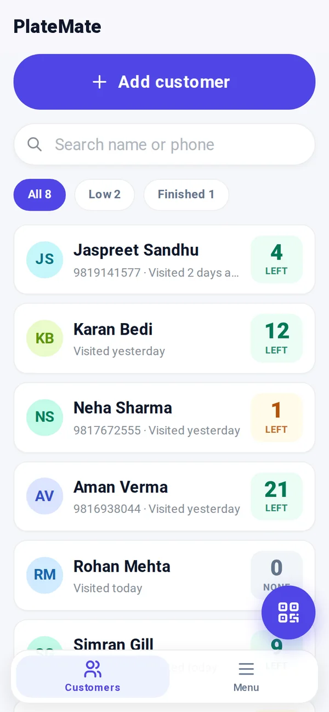
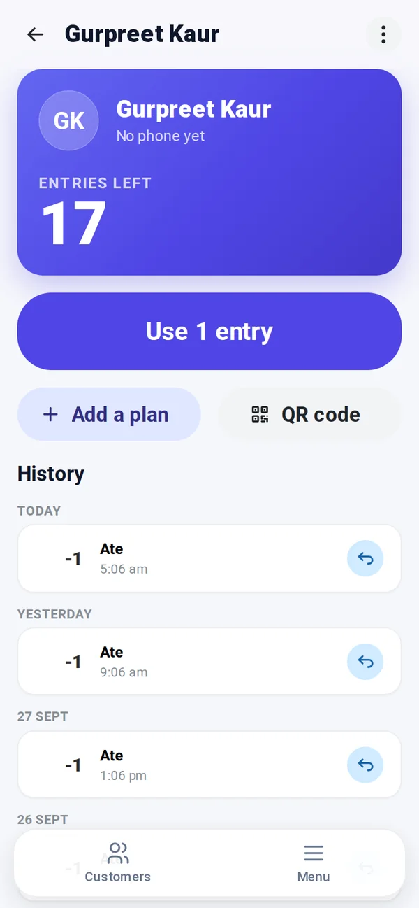
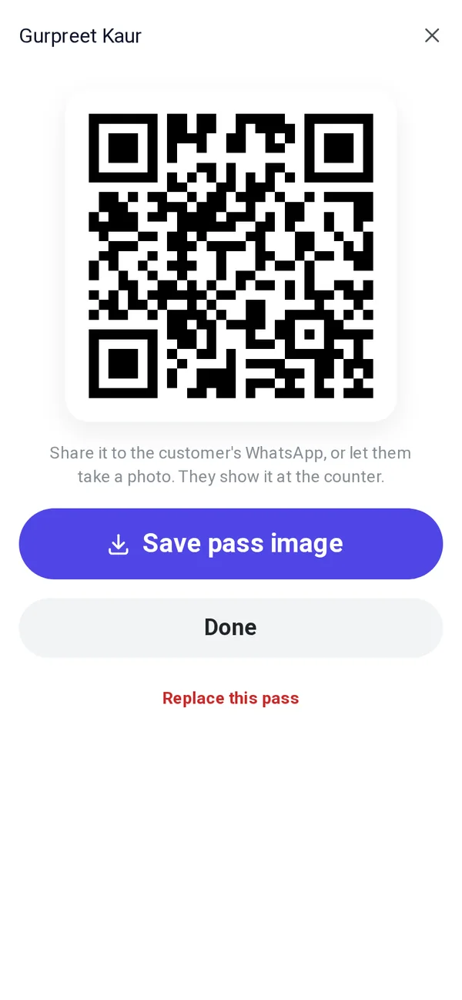
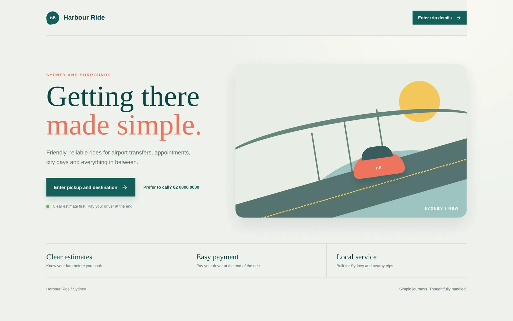
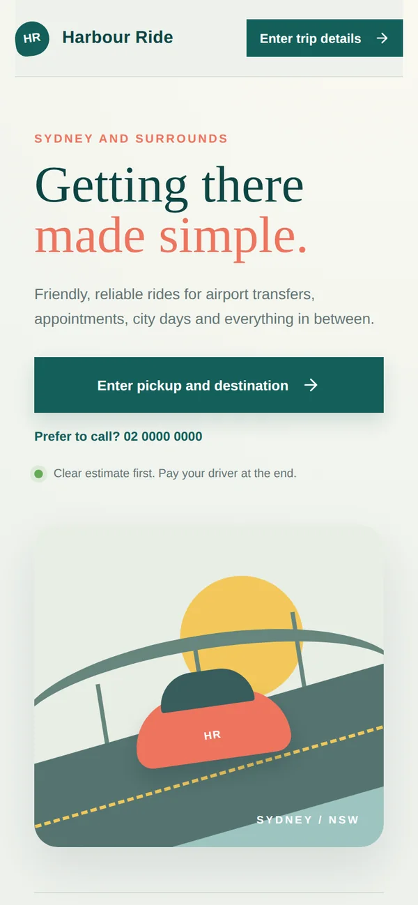

Fig. 1The author.Move over the drawing to see the photograph.
Full-stack developer in Mohali, Punjab. I build web apps end to end with MongoDB, Express, React and Node, and reach for Next.js when one codebase fits better than two.
JWT24 h token, 30 days with Remember mePOST /api/auth/refresh signs a new onePasswords hashed with bcrypt, 10 roundsGoogle ID tokens checked with google-auth-library
Exploded view The landing page, lifted off the layers that run it.
API testing was spread across tools, so auth and request history were hard to keep hold of. Postmen puts the request builder, formatted responses, saved history and usage stats in one signed-in dashboard.
It started as a MERN build with a separate Express server and a Vite client, then was rebuilt as one Next.js app whose route handlers talk to MongoDB directly.
2ServerRoute handlers for auth, requests, history and stats
3AuthJWT with refresh, bcrypt-hashed passwords, Google sign-in
4DataMongoDB Atlas through Mongoose: users and request history
Tested end to end with Playwright. Hosted on Vercel.
Revisions
34 commits
Issued
Aug 2025 to Feb 2026
Status
Live
Sheet
A-101
PlateMate
Counter app, offline PWA
A meal-pass counter for a buffet. The owner adds a customer, sells a plan and ticks off a meal at each visit. It runs on the owner's phone and keeps working with the internet off.
Camera scans a pass with html5-qrcodeqrcode.react draws each pass, saved as an imageA service worker keeps it working offline



1Interface
2Device
3Rules
4Data
Exploded view List, customer and QR pass on a phone, over the layers beneath. Names are sample data.
The README puts it plainly: It counts meals, not money. Payment happens at the counter, so the app holds no prices at all.
Version 1.0 closed a double charge: a quick double tap on Start plan credited a plan twice for one payment. Every write now passes a guard that flips synchronously. In 1.1 the list lost its Use 1 buttons, because a stray thumb while scrolling could take someone's meal.
Backups export the whole database as one JSON file, and restores are all or nothing on purpose.
2DeviceCamera QR scanning, QR passes saved as images
3RulesOne data layer with no React: credits, customers, plans, backup
4DataIndexedDB through Dexie, on the phone. There is no server.
Tested with Vitest against fake-indexeddb. Runs from any static host.
Revisions
17 commits
Issued
Sep 2026
Status
Installable, v1.4
Sheet
A-102
Harbour Ride
Booking prototype, maps and email
A taxi booking site for Sydney. Riders see a fare on a real route before they book, and each booking lands in the operator's inbox with a reference number.
4 Mail
New ride request HR-…Booking referencePassengerPhoneEmailPickupDestinationWhenVehicleEstimateNotes
Sent to the operator with Nodemailer
3 Server
POST /api/estimate geocode, route, price, 15 min to bookPOST /api/bookings one booking per quote, then emailGET /api/health
Express, with Nominatim for addresses and OSRM for routes
2 MapLeaflet on OpenStreetMap tiles, the route drawn as a line


1Interface
2Map
3Server
4Mail
Exploded view The landing page on desktop and phone, over the map, server and mail.
The server prices every quote and gives it an expiry, so the fare a rider books is the fare they were shown. A quote can be booked only once, which stops a double submit from creating two bookings.
If address lookup fails, the estimate falls back to a demo route instead of blocking the form.
A double tap once credited a plan twice, and a stray thumb in the list could spend a meal. Writes now pass a guard that flips synchronously, and list rows no longer spend.
I'm working through Full Stack Open from the University of Helsinki and The Odin Project alongside client-style builds. I'm open to full-stack roles and to project work.
A-300
Schedule of materials
What I build with, and where each one is used. A layer keeps its hatch on every sheet.
Tools and libraries, grouped by layer, with the projects that use each
Layer
Material
Used in
A-400
Drawing register
Every repository on GitHub. No. is the order each one was started, Rev. counts commits, and Updated is the last push.
Street elevationEach repository is a building, in the order it was started. A floor is a commit, a hatched front is a build, and a lamp on the roof means the site is live.
All repositories, newest first
No.
Title
Description
Built with
Rev.
Updated
Live site
A-500
Have something to build?
I'm open to full-stack roles and project work. Email is the quickest way to reach me.